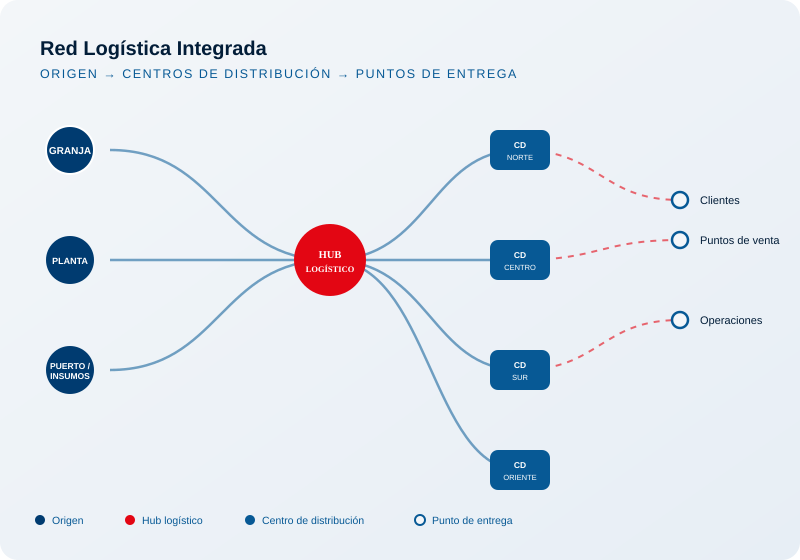

LOGIXSC+
Gerencia de Logística
Gestión, innovación y transformación de nuestra cadena logística.
Misión y Visión
Misión
Impulsar una gestión logística integrada, eficiente y orientada al servicio, generando valor para nuestros negocios.
Visión
Ser una logística conectada, inteligente y transformadora, soportada en personas, datos y tecnología.
Quiénes Somos
El equipo que lidera la operación logística de San Fernando y Chimú, todos los días.
Liderazgo con visión operativa
Un equipo multidisciplinario que combina experiencia de campo, gestión de flota y visión tecnológica para sostener una operación logística de alto desempeño.
Cada jefatura articula personas, procesos y datos para que la cadena logística funcione como un solo sistema.
Jefatura de Transporte
Flota & RutasJefatura de Almacenes
Almacén CentralJefatura de Planificación
Analítica & DatosJefatura de Comercio Exterior
MacroinsumosNuestros Negocios
Ocho negocios logísticos que sostienen la cadena de suministro de San Fernando y Chimú.
Red Logística

Nuestra red logística conecta el origen de la operación con los centros de distribución y los puntos de entrega, integrando información y flota en un solo sistema.
Analítica
Catálogo de dashboards Power BI por empresa y por negocio, con acceso directo a cada tablero.
Implementación
Proyectos y automatizaciones
No se encontraron proyectos con los filtros seleccionados.
Eventos Logísticos
Comités, reuniones y actividades de la Gerencia de Logística.
No hay eventos registrados en esta categoría.
Transformación
Cuatro pilares que sostienen la evolución de nuestra logística.
Datos
Información confiable y en tiempo real como base de toda decisión logística.
Digitalización
Procesos y documentos digitales que agilizan toda la cadena logística.
Automatización
Tecnología que elimina tareas manuales y reduce tiempos de operación.
Innovación
Nuevas soluciones que anticipan los retos de la logística del futuro.
Tecnologías
Un ecosistema tecnológico que conecta inteligencia artificial, datos y operación.
Python
Automatización & datosPower BI
Business IntelligenceGPS
Ubicación de flotaGeolocalización
Seguimiento en tiempo realGeofences
Zonas de controlIoT
Sensores conectadosAutomatización
Procesos inteligentesAPIs & Integraciones
Sistemas conectadosNuestro compromisoAlimentar cada vez mejor a más familias